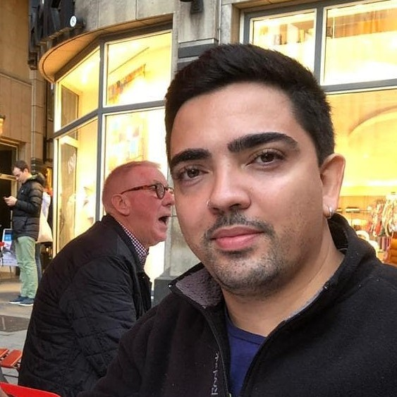

{{template "header.html"}}
<section class="container body-about-container">
    <div class="container has-text-centered" style="margin-left: 100px;margin-right: 100px;  border-radius: 10%;">
        <div class="columns is-vcentered">
            <div class="column is-5">
                <figure class="image is-4by3">
                    
                </figure>
            </div>
            <div class="column is-6 is-offset-1">
                <figure class="image is-128x128 is-inline-block">
                    
                </figure>


                <h1 class="title is-3">
                    Ian Guedes
                </h1>
                <h2 class="subtitle is-6">
                    Passionate about musical instruments, languages ​​and languages.
                    Website developed in Golang, Bulma CSS,using Gin framework and GORM(ORM) for MySQL&Mongo databases.
                </h2>
                <br>
                <div class="has-text-centered flex">
                    <a style="margin-right: 20px;" class="button is-small is-info is-outlined "
                        href="https://github.com/ianvgs/Go-Api-Gin-Gorm">
                        Source Code <i class="fa fa-github ml-3"> </i>
                    </a>
                    <a class="button is-small is-info is-outlined" href="https://www.linkedin.com/in/ianvgs/">
                        Linkedin
                    </a>
                </div>
            </div>
        </div>
    </div>

</section>


{{template "footer.html"}}